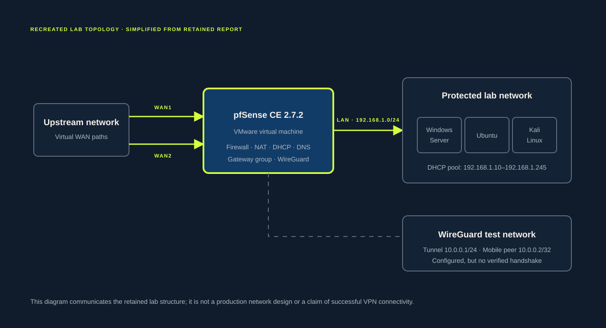
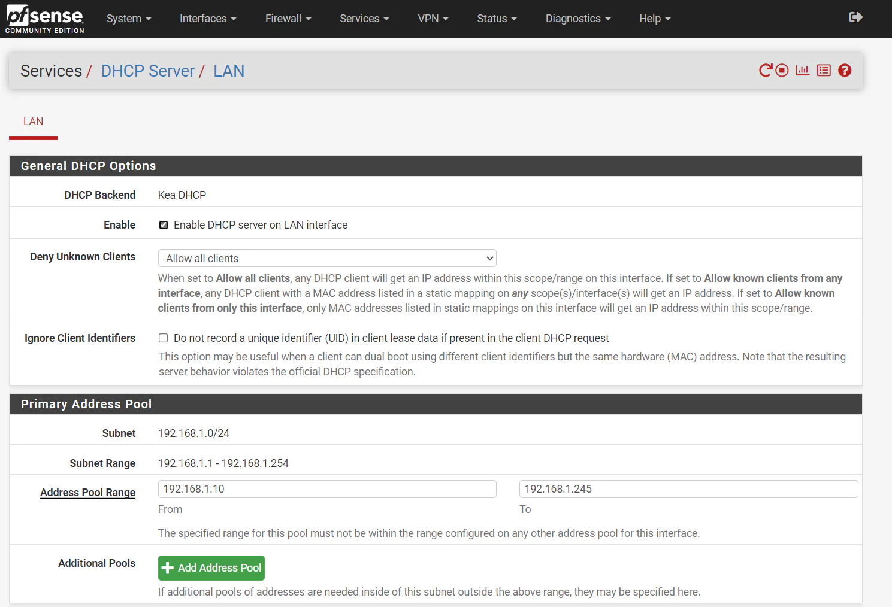
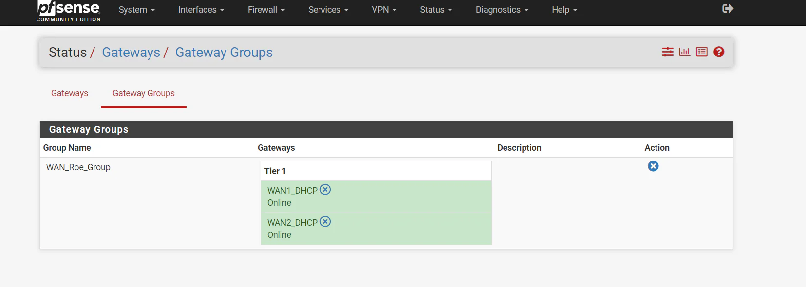
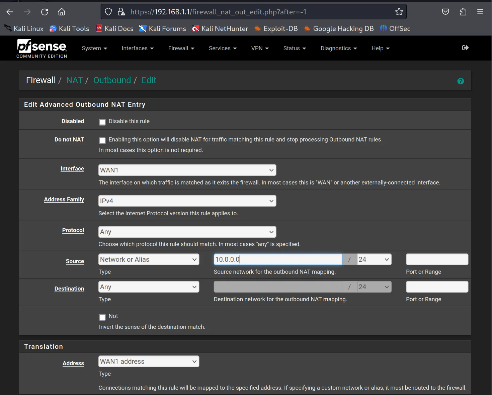
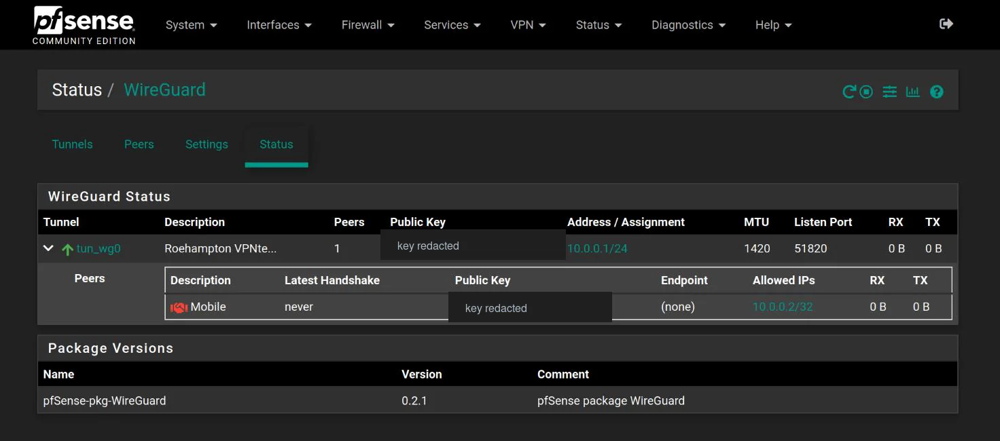

Final-year project · University of Roehampton · 2024
pfSense Network Security Lab: Configuration and Troubleshooting
An undergraduate VMware lab exploring pfSense CE 2.7.2 through virtual network configuration, DHCP and DNS services, firewall policy, multi-WAN routing and WireGuard VPN configuration. The project developed my understanding of network security, rule design, NAT and structured troubleshooting.
01 Environment & objectives
A controlled virtual lab for learning how network controls fit together.
The lab placed pfSense between virtual upstream and protected network paths. Windows Server 2022, Ubuntu and Kali Linux systems provided a small environment in which to configure services, examine rule behaviour and practise troubleshooting without presenting the work as a production security deployment.

02 Implemented configuration
The work covered addressing, policy, routing and remote-access setup.
DHCP and DNS
Configured a protected 192.168.1.0/24 LAN, a DHCP pool and university and public DNS resolvers.
Firewall and NAT
Created interface rules and outbound NAT entries while learning how source, destination, protocol and rule order affect traffic.
Multi-WAN
Placed two online gateways in the same Tier 1 group. This represents a load-balancing arrangement rather than evidence of tested failover.
WireGuard
Created a tunnel, mobile peer, WAN rule and outbound NAT configuration. The service ran, but the peer did not establish a handshake.
Squid
Completed package installation. The retained evidence does not demonstrate a tested or verified content-filtering policy.
IPsec and IDS/IPS
Discussed in the report, but not presented here as completed outcomes because insufficient configuration and test evidence remains.
03 Evidence & outcomes
What the retained material supports—and what it does not.
Separating configuration from verified outcomes is important. The table below records only what can reasonably be supported by the final report and surviving screenshots.
| Area | What the evidence supports |
|---|---|
| DHCP | Configured on 192.168.1.0/24 with an address pool of 192.168.1.10–192.168.1.245. |
| DNS | University and public DNS resolvers were configured. |
| Multi-WAN | Two gateways were placed in a Tier 1 gateway group and shown online. |
| WireGuard | Tunnel, peer, firewall and outbound NAT configuration were created. |
| WireGuard result | The tunnel was running, but the peer never completed a handshake and transferred no traffic. |
| Squid | Package installation was completed. |
| IPsec and IDS/IPS | Discussed in the report, but insufficient retained configuration or test evidence remains. |
| Performance | Qualitative conclusions only; no raw measurements or dataset were retained. |
04 Retained evidence
Four screenshots that demonstrate the actual configuration and result.



10.0.0.0/24 was configured to translate through WAN1.
0 B. Key identifiers have been redacted.05 Troubleshooting retrospective
The failed WireGuard connection became the most useful learning outcome.
The original investigation attributed the failed connection to university network restrictions. Reviewing the retained evidence later showed that this conclusion was not definitive. The more defensible outcome is a documented unresolved fault with clear next diagnostic steps.
Configuration existed
The tunnel used 10.0.0.1/24, the mobile peer used 10.0.0.2/32, UDP port 51820 was selected and outbound NAT covered 10.0.0.0/24.
No handshake occurred
pfSense showed the tunnel running, but the peer endpoint was absent, the latest handshake was “never”, and both receive and transmit counters remained at zero.
Blocking was not proven
The external port checker shown in the report tested TCP, while WireGuard uses UDP. Upstream NAT and port forwarding were also not conclusively verified.
How I would investigate it now
- 01Correct and review the WAN rule. Confirm UDP, destination WAN address and port
51820, with an appropriate external source scope. - 02Capture UDP traffic on WAN. Use pfSense packet capture to determine whether peer packets reach the firewall at all.
- 03Verify upstream NAT. Check the upstream device, public address and any required port-forwarding path.
- 04Test independently. Connect from a separate mobile network to remove the university path from the first comparison.
- 05Define success with evidence. Confirm a current handshake, a learned endpoint and increasing RX/TX counters before calling the VPN operational.
06 Limitations & next iteration
What I would preserve, test and document differently.
Evidence that is missing
- Original VMs and pfSense configuration exports
- Raw throughput, latency and resource-use measurements
- A verified WireGuard handshake and traffic transfer
- Sufficient IPsec, IDS/IPS and Squid policy test evidence
- A controlled outage test proving gateway failover
A more reproducible lab
- Version and retain sanitised configuration exports
- Use a written test plan with expected and observed results
- Record packet captures and relevant firewall logs
- Collect repeatable before-and-after performance data
- Test load balancing and Tier 1/Tier 2 failover separately
07 Skills demonstrated
Technical configuration matters; explaining the evidence matters too.
VMware lab design
IPv4 addressing
DHCP and DNS
Firewall rule design
NAT and routing
Gateway groups
WireGuard configuration
Structured troubleshooting
Evidence-based reporting
Technical documentation
The strongest outcome is not a claim that every feature worked. It is the ability to explain what was configured, what was verified, what failed and how I would investigate the remaining uncertainty.
Return to all projects